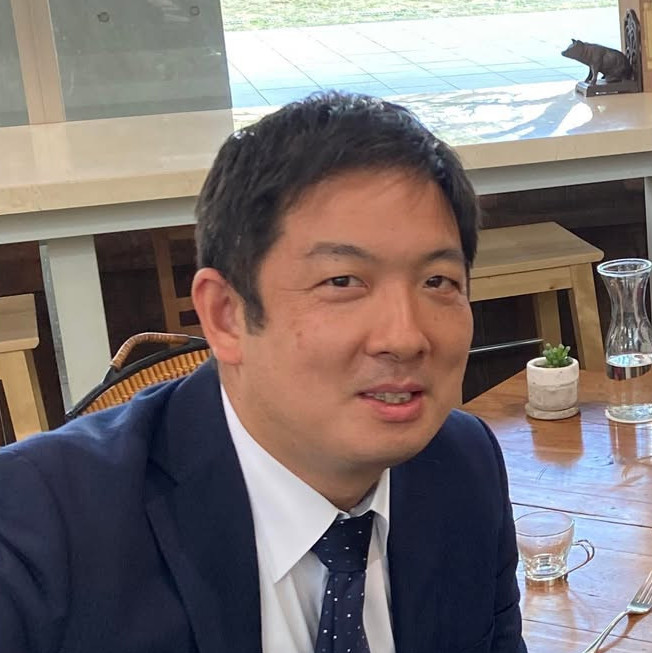

第一原理計算
経験的なパラメータに依存せず、量子力学に基づいて材料の電子状態・安定性・物性を予測します。

第一原理計算を中心とした計算科学の手法を用いて、物質の電子状態と構造・物性の関係を研究しています。固体物理と材料科学を横断し、分子性導体や軽金属材料が示す多様な相と機能の起源を、ミクロな視点から明らかにすることを目指しています。
理論と計算から、複雑な物質世界の地図を描きます。
経験的なパラメータに依存せず、量子力学に基づいて材料の電子状態・安定性・物性を予測します。
電子相関、電荷秩序、ディラック電子など、分子性固体に現れる豊かな量子現象を研究します。
マグネシウム合金などを対象に、相安定性や変形機構を計算し、新しい材料設計の指針を探ります。
Y. Suzumura, T. Tsumuraya, M. Ogata · Physical Review B 112, 195414
M. Wakizaka et al., T. Tsumuraya et al. · ACS Applied Materials & Interfaces 17, 14322–14328
M. Itoi et al., T. Tsumuraya et al. · Physical Review Research 6, 043308
T. Tsumuraya, T. Miyazaki, H. Seo · Journal of the Physical Society of Japan 93, 123704
K. Yoshimi, T. Misawa, T. Tsumuraya, H. Seo · Physical Review Letters 131
軽金属材料研究拠点（先進マグネシウム国際研究センター）
大学院先導機構・文部科学省 卓越研究員
若手国際研究センター
加藤分子物性研究室
Department of Physics and Astronomy
大学院先端物質科学研究科 量子物質科学専攻
計算材料科学・固体物理をともに探究するメンバーです。
プロフィールと研究業績